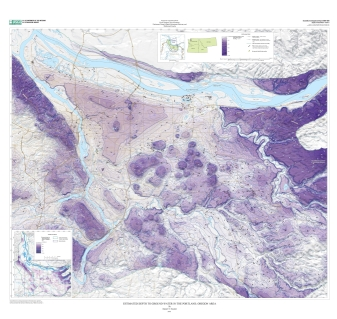
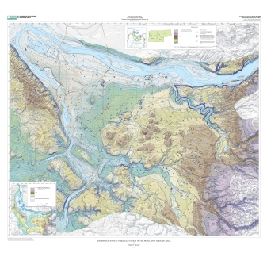
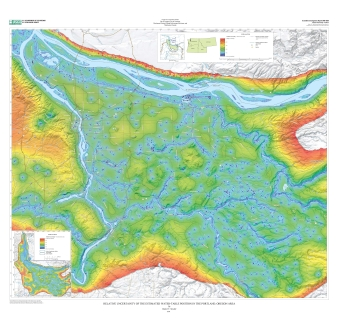

U.S. Geological Survey
Estimated Depth to Groundwater in the Portland, Oregon Area
Estimated Depth to Groundwater Mapper
Introduction
Partners and Cooperators
Instructions
Disclaimer
Contact
Links to overview maps:



Depth to Water
Water-Table Elevation
Uncertainty
Low resolution:
4 MB
High resolution:
22 MB
Low resolution:
4 MB
High resolution:
25 MB
Low resolution:
3 MB
High resolution:
23 MB